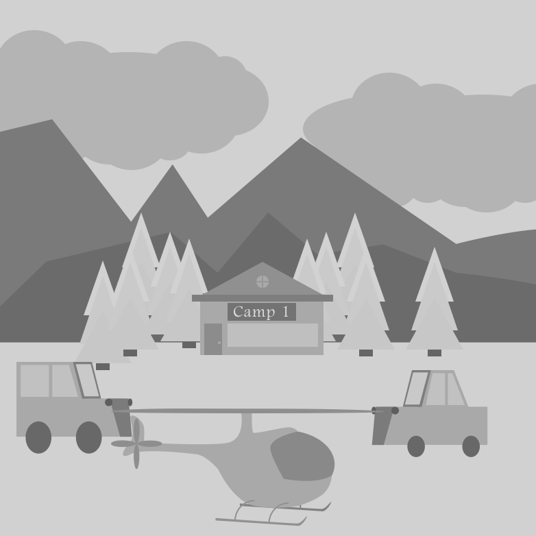
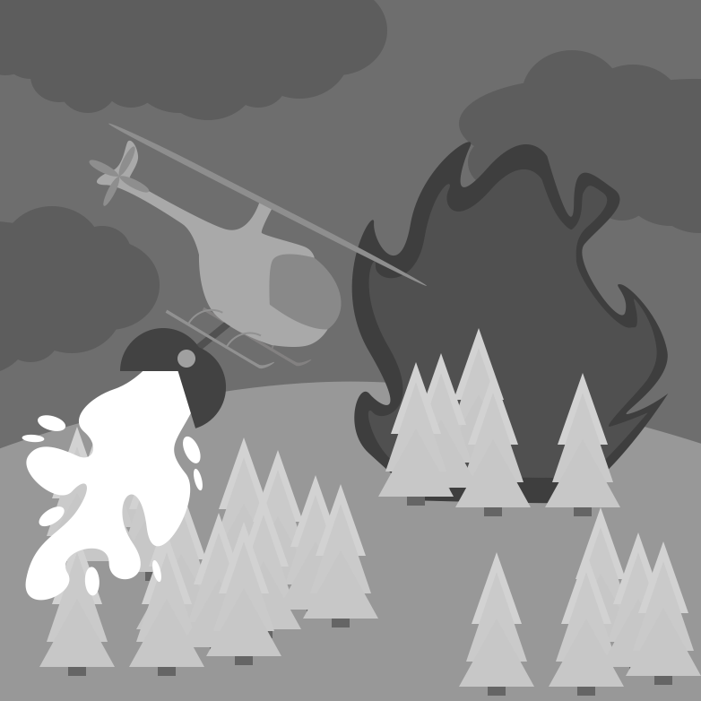
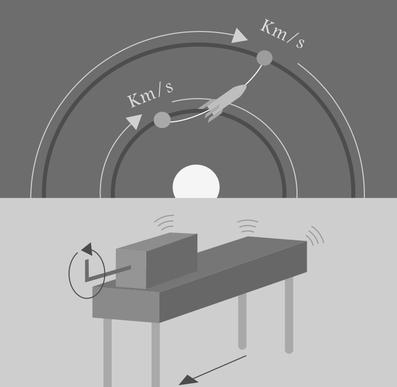

Anchored instruction, a form of situated learning, uses realistic problem spaces and integrates what students need to do with how professionals and experts would perform when faced with the same dilemma. Students are presented macro-contexts from which all of their learning and instruction will be based around (i.e., the macro-context is an anchor of their experience). The design of the anchors are important, as they will influence the interest and active construction of knowledge [2]. The anchors can be thought of generators, in that rather than lecture students about a setting or reflect some billboard of context, the anchors themselves are stories that learners can explore and interact with. Supporting the richly anchored narrative, the problems and activities in these macro-contexts are authentic and rely on real data for their difficulty and intrigue—which require authentic action to solve.

Students are incredibly adept at detecting when you want them to do something for the sake of doing it (i.e., an unmotivated action). The intent is to leverage the rich experience of finding and acting through a realistic role, and then solve meaningful problems connected to that role. The knowledge that students can develop in these rich problem spaces are meaningful to a real context, there is a purpose to what they are learning and doing. Beyond the real-world connection, anchored instruction strings together activities of growing complexity while maintaining a common story. This binding thread gives students a familiar foundation to relate their ideas within and between different problems in the space. This design helps learners move from being a novice learner to being able to gain an understanding of how to generate, define and achieve complex goals [1].

Building a realistic narrative sets the rules and behaviors that students should focus on emulating. Often, a video-based format can help bridge a student's imagination to becoming a member of this world. The intent of the video narrative is not to provide lecture based information, rather it is to introduce a problem and frame its realness for students.
The challenge posed by the world component should be presented in a generative format. Students are given a goal, but then need to identify the ways in which they will accomplish that goal, hence generating the problems they will need to solve. Part of anchored instruction is to compare how students think about achieving the goal and understand the connections and relationships between the problems they choose. The setup of the problem gives a deep richness to the variables of interest, and as students test and solve problems, they can begin to identify strengths and weaknesses in their understandings [1].
After students work through the main problem, follow-up questions and situations can be designed that recombine parts of the base problem in order to form new problems with a familiar context. In such questions, a single variable could change, which forces the student to reassess their existing knowledge—can "I" use the same solution and why or why not? Beyond creating new problems based on the anchored context, students can take part in making new stories for themselves or others. This further increases students' understandings of the domain.
After the main problem has been solved, students can work on extension problems to test their understandings and make their knowledge flexible. These problems do not have to occur in the main anchored context, and can therefore bridge to general principles in the process of learning a domain (e.g, mathematics, history, writing, etc.).
The importance of connection from the anchored instruction to the real world makes a huge difference for students. When their learning can extend to people doing things in real life, their motivation to continue learning is fueled. This can take learning about planning a rescue mission of an animal using a plane to studying flight plans of Charles Lindbergh or understanding plans to reach the moon [1]. Other avenues could start in learning about solar power and connect to examples like Elon Musk and Tesla. The value of the anchored instruction mentality engages students in problem posing, which can lead to them connecting what they are learning to future and life long learning.

The setup of the world and learning experience provides a set of roles and expectations that students can think about as they navigate the situation. These contextual elements help provide a conceptual basis for how the world works and what can be done in it. A world that lacks this rich depthiness (i.e., a stack of papers) hinders knowledge from becoming interconnected and purposeful. A rich visualized world quite literally provides a forest of context that gives a learner a "coat rack" that they can hang their knowledge on—information is given purpose by its function in the world.

A rich world is wasted if there is no meanigful interaction with it. The painting of this world is not meant to be admired and quickly forgotten, but picked apart and reconfigured. A student may be posed with a general problem, like scout the forest, and then they need to develop their own way to go about that mission. This creates problems related to their current way of thinking. The opposite of this is forcing a solution path upon them or using a one-time perspective that's dumped at the next activity.
As students navigate this world and develop a robust understanding, they can learn to use the same elements in different ways for different problems. So if students previously learned about fuel and mission planning for single trip rescue missions, they will need to go beyond what they first learned as their new mission is to put out multiple forest fires.
The skills learned throughout a single world can be tested in other domains of knowledge. If the student learned to use math in computing rescue paths, those same skills could be used in to understand things in astrophysics, robotics, programming, coding, and so on. Extension problems like this can be built into the original learning experience by changing the narrative of the world as the student progresses, or can students can be prepared for them in future learning experiences down the road.
A rich world of learning has one last final feature, connecting what the student learns to the community. When the learning can be mapped onto what some professionals already do (e.g., park ranger, engineer, scientist, etc.), the student can continue to build their knowledge and participate in adventurous learning. For example, there are many resources available on the web that have information about making solar-powered robots, hydrolic contraptions, and understanding ecology or climate change. A learning experience such as anchored instruction provides a relatable context that students can resuse to continue their learning.
References
1. Cognition and Technology Group at Vanderbilt. (1992). The Jasper series as an example of anchored instruction: Theory, program description, and assessment data. Educational Psychologist, 27(3), 291-315.
2. Cognition and Technology Group at Vanderbilt (1993). Anchored instruction and situated cognition revisted. Educational Technology, 33 (3), 52- 70.


Designed and Developed by Nicholas Persa